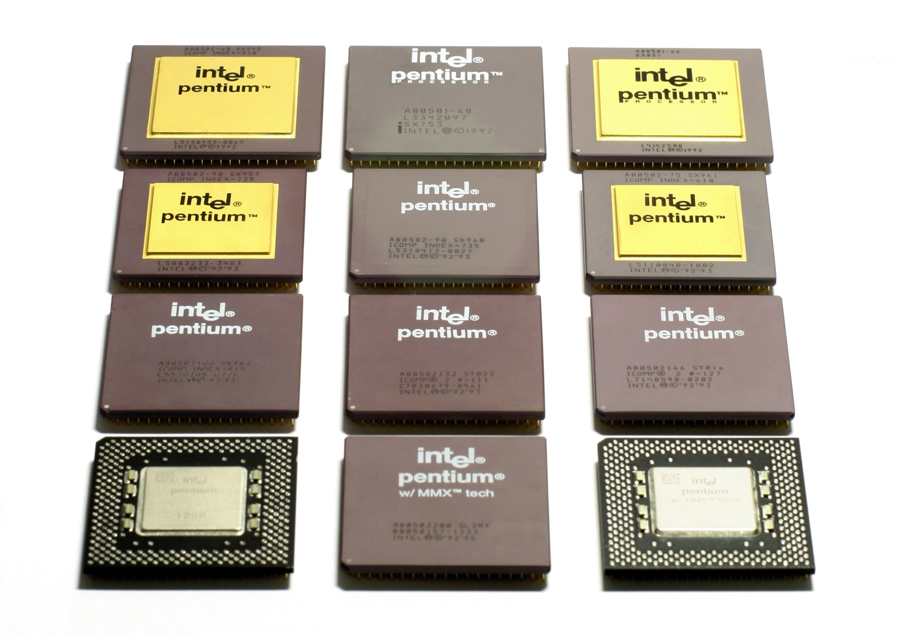
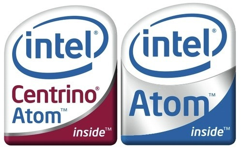
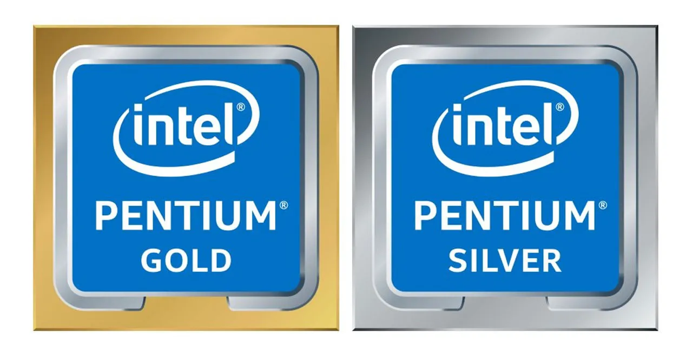
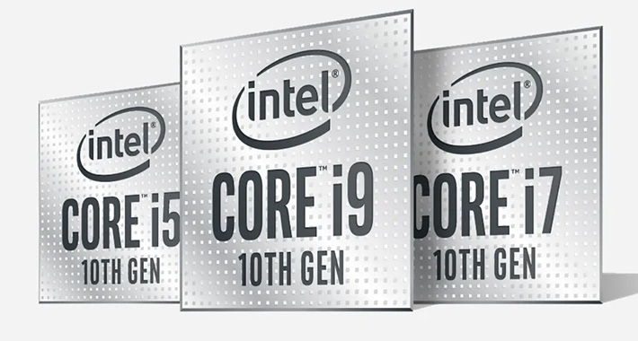

El microprocesador es producto surgido de la evolución de distintas tecnologías predecesoras, básicamente de la computación y de la tecnología de semiconductores. El inicio de esta última data de mitad de la década de 1950; estas tecnologías se fusionaron a principios de los años 1970, produciendo el primer microprocesador. Dichas tecnologías iniciaron su desarrollo a partir de la segunda guerra mundial; en este tiempo los científicos desarrollaron computadoras específicas para aplicaciones militares. En la posguerra, a mediados de la década de 1940, la computación digital emprendió un fuerte crecimiento también para propósitos científicos y civiles. La tecnología electrónica avanzó y los científicos hicieron grandes progresos en el diseño de componentes de estado sólido (semiconductores). En 1948 en los laboratorios Bell crearon el transistor.
TIPOS DE PROCESADORES

Los procesadores o microprocesadores son las piezas de
la computadora encargadas de dirigir y coordinar los
diversos componentes de la computadora (o de otros
aparatos que los poseen), son microchips que controlan
todas las tareas de la computadora, por lo que se puede
decir que es el cerebro de la computadora. El procesador
también denominado CPU (Unidad Central de
Procesamiento), realiza diversos procesos numéricos (en
lenguaje binario), entre los que se cuentan las diversas
instrucciones que ejecutan otras partes de la
computadora (hardware), siendo la parte coordinadora
que realiza los procesos lógicos necesarios para el buen
funcionamiento de una computadora o aquellos aparatos
que los contienen.
Es una pieza que está hecha principalmente de cilicio
entre otros componentes, misma que se coloca en la
placa base o tarjeta madre de la computadora. Pueden
ser simples o poseer más de un núcleo, (un núcleo es un
procesador en miniatura), los procesadores que poseen
dos o más núcleos pueden realizar varias funciones
simultáneamente, lo que agiliza los procesos y da más
rapidez al procesador en su conjunto, dando mayor
velocidad a ciertos programas que necesitan gran
velocidad de procesamiento.
Los procesadores son los cerebros que poseen las
computadoras y otros aparatos, fueron inventados en la
década de los años 70 (procesador Intel 4004, en el año
de 1971), teniendo una evolución en la rapidez y la
capacidad de procesamiento de manera exponencial. En
la actualidad existen procesadores con uno, dos o más
núcleos, siendo los procesadores de 4, 6 y 8 núcleos los
que actualmente se encuentran en el mercado, aunque
existen procesadores de más núcleos (12 y 16) que están
enfocados para máquinas que tengan cargas de trabajo
muy pesadas, como las que ejecutan computadoras de
grandes empresas de telecomunicaciones. Y siendo una
tecnología relativamente reciente aún no existe
disponibilidad elevada en el mercado a gran escala. Los
diversos tipos de procesadores se pueden clasificar ya
sea por la marca o empresa que los fabrique, por la
cantidad de núcleos de procesamiento, por el tipo de
máquina a la que pertenece (P.C, laptop, netbook u otros
aparatos como consolas de videojuegos), por las
características físicas y procesos específicos que deben
tener, como por ejemplo mayor disipación del calor o
tamaño más reducido, o por la generación a que
pertenece el procesador.
ALGUNOS TIPOS DE PROCESADORES SON:

Procesadores tipo Atom.- Los procesadores Intel Atom
son procesadores de bajo consumo energético y están
diseñados para usarse en netbooks y otros dispositivos
de cómputo especializados en redes, es decir, en
máquinas en donde la vida útil de la batería, así como el
consumo de energía, son más importantes que el poder
de procesamiento en sí.
Celeron.- Estos procesadores están diseñados para su
uso en computadoras de escritorio o P.C. de escritorio,
enfocadas al uso familiar principalmente para actividades
de navegación web y cómputo básico o no especializado.

Pentium.- Pentium ha sido usado como nombre para
procesadores de doble núcleo energéticamente eficientes
y diseñados para computadoras de escritorio. Los
procesadores Pentium tienen indicadores numéricos que,
al igual que otros procesadores Intel, indican niveles más
altos de características con números de series superiores.

Procesadores Core.- Son todos los procesadores que
poseen más de un núcleo, el cual se denomina Core,
existen dos clases, mismas que se denominan Core i7 y
Core 2 Dúo, que varían en la cantidad de Cores o núcleos
de procesamiento. Los procesadores Core de más de un
núcleo comenzaron a comercializarse a partir del año
2005, popularizándose desde ese entonces gracias a sus
diversas propiedades que han ido evolucionando. En la
actualidad ya existen procesadores Core de 12 y hasta 16
núcleos, pero aún no han sido comercializados a gran
escala, siendo únicamente distribuidos para grandes
empresas que necesitan velocidades y volúmenes de
procesamiento mayores, como bancos, financieras,
empresas contables, y empresas especializadas en el
manejo de datos a gran escala como las telefónicas, etc.
Xeon e Itanium.- Son procesadores especializados en
máquinas que su trabajo principal es la red, son
especiales para uso de servidores. Estos procesadores se
identifican por tener tres indicadores especiales la letra X,
(para especificar que se trata de un procesador de alto
desempeño), la letra E (indicando que es un procesador.